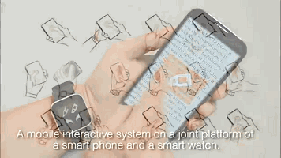
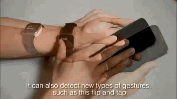
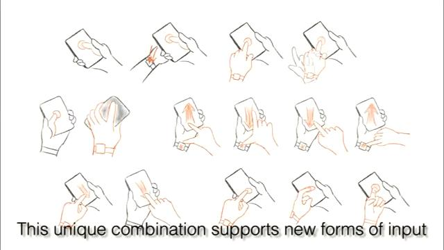
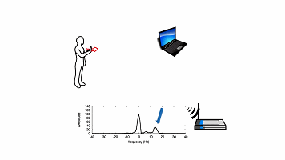
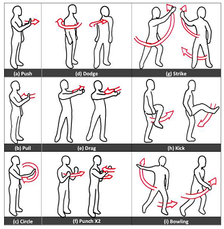
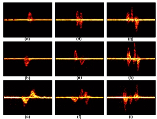

您的浏览器不支持impress.js, 这里为您展示的是文档的简化版本。
为了更好地观看文档，请使用Chrome、Safari或Firefox浏览器。
Duet: Exploring Joint Interactions on a Smart Phone and a Smart Watch
from CHI 2014



Whole-Home Gesture Recognition Using Wireless Signals
from Mobicom'13

 
请使用空格键或方向键浏览文档